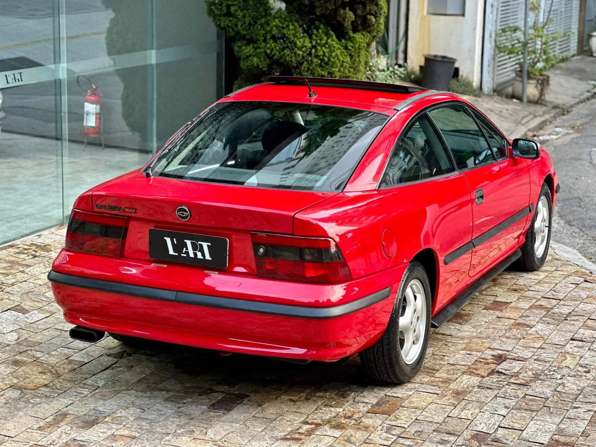
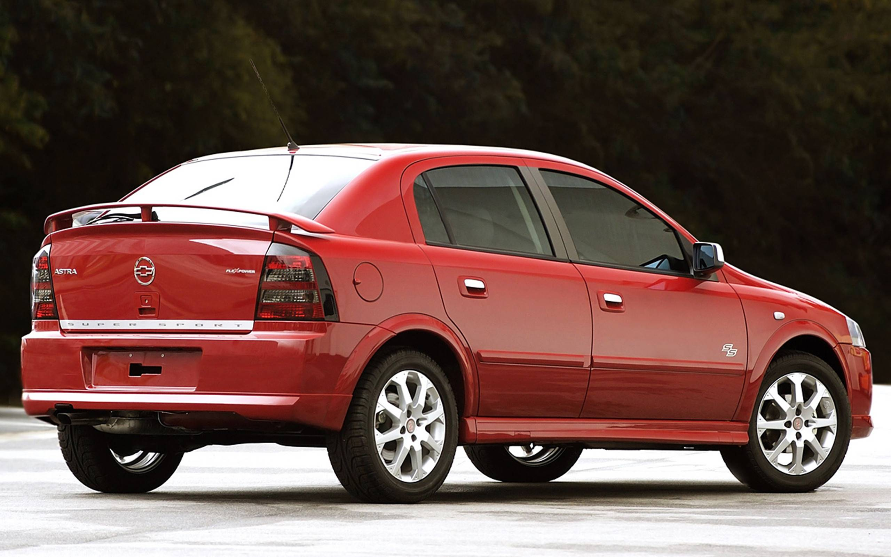
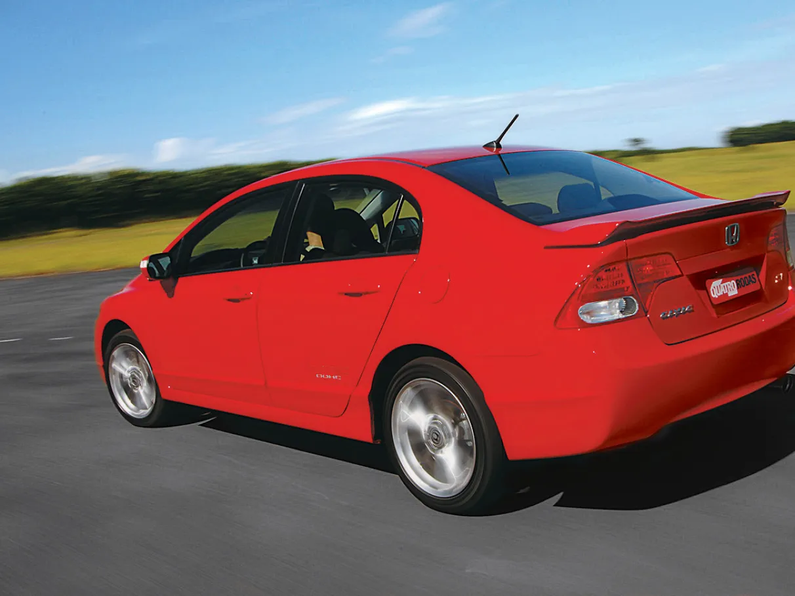
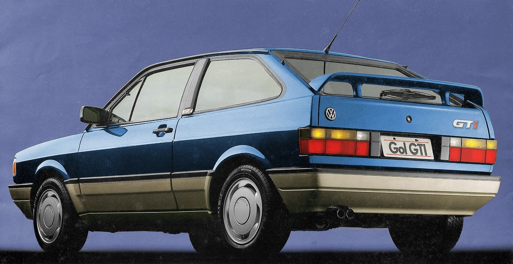
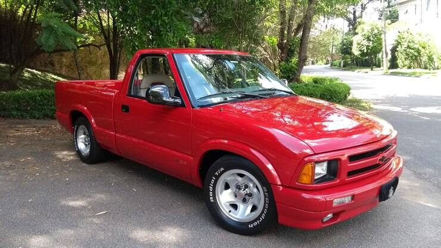
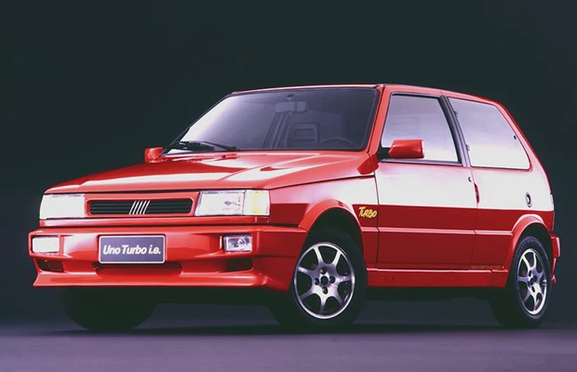
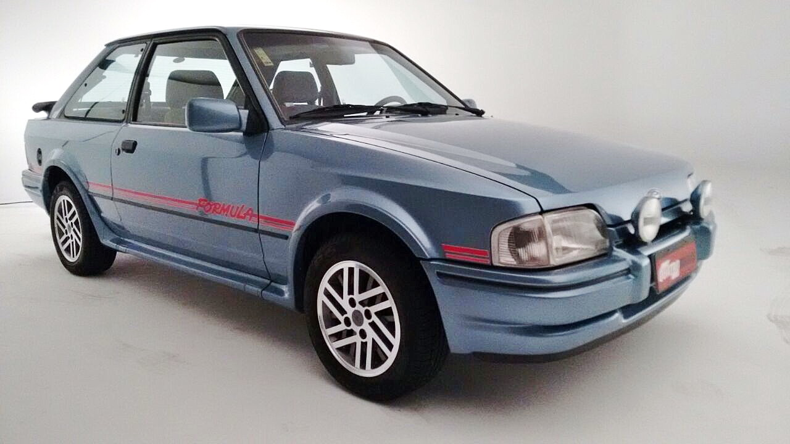

Esportivos
Carros que fizeram história pelo desempenho, estilo e personalidade.
Chevrolet Kadett GSi
Um dos esportivos mais marcantes da Chevrolet nos anos 90, famoso pelo desempenho e pelo visual agressivo.
Chevrolet Corsa GSi
Compacto, leve e divertido, o Corsa GSi trouxe uma pegada esportiva para um dos modelos mais populares da Chevrolet.

Chevrolet Calibra
Coupé de visual marcante que conquistou espaço entre os apaixonados por esportivos.

Chevrolet Astra SS
Visual esportivo, motor forte e uma das versões mais desejadas do Astra.

Honda Civic Si
Um dos esportivos japoneses mais desejados, conhecido pelo motor de alta rotação e comportamento divertido.
Volkswagen Parati GTI
A perua que ganhou alma esportiva e virou uma das versões mais especiais da Parati.

Volkswagen Gol GTI
Um dos maiores ícones esportivos da indústria brasileira e sonho de consumo de uma geração.

Fiat Tempra Turbo
Um sedã que mostrou que desempenho e praticidade também podiam andar juntos.

Chevrolet S10 SS
Uma picape com visual esportivo e atitude, levando a sigla SS para um terreno diferente.

Fiat Uno Turbo
Pequeno por fora e nervoso por dentro, o Uno Turbo virou uma lenda entre os esportivos nacionais.
Audi A3 Turbo
Sofisticação alemã combinada com desempenho e o famoso motor turbo.

Ford Escort XR3
Um dos esportivos mais desejados do Brasil, marcado pelo visual ousado e pela personalidade.